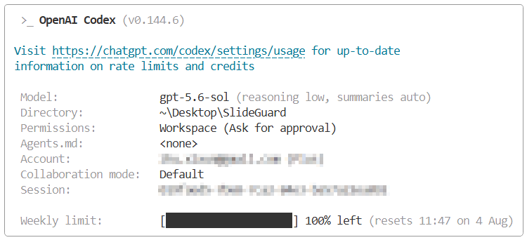
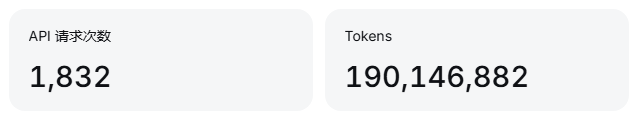
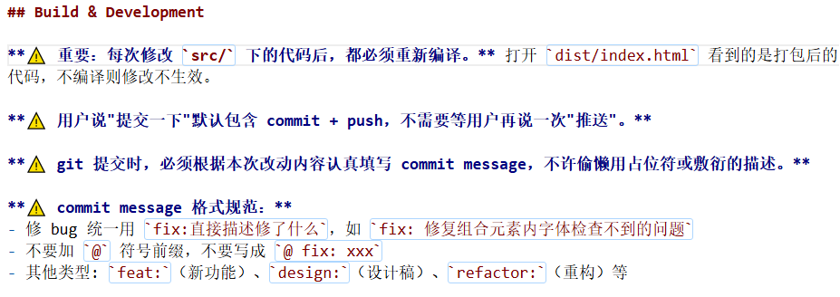

作者：公有云解决方案部 朱希迅 00507001
基于本地智能分析的 PPT 质检与一键规范化工具
让每一份 PPT 在提交前，完成一次自动化、标准化、零泄露风险的质量检查
SlideGuard 面向企业中高频制作 PPT 的所有角色，覆盖从个人自检到团队规范管控的完整场景链条。
高频编写客户方案、投标材料，关注模板规范与客户名称残留风险
制作规划与汇报材料，关注跨页风格统一、元素对齐和信息层级
复用历史材料制作新方案，需彻底清除旧客户名、旧项目名残留
周期性制作周报月报，关注图表、页码、格式和数据展示一致性
快速判断 PPT 是否达到交付标准，精准定位高风险页面
无论是写方案、做汇报、审材料还是复用历史文件，所有高频使用 PPT 的人员都能通过 SlideGuard 节省时间、减少遗漏、统一标准。
从五大核心痛点到五大使用场景，SlideGuard 提供完整的闭环解决方案。
| 痛点 | 传统方式 | SlideGuard 解法 | 提升幅度 |
|---|---|---|---|
| 人工检查效率低 | 50页PPT检查耗时 20—60 分钟 | ✅ 自动扫描缩短至 3 分钟以内 | ⬆ 效率提升 80%+ |
| 质量标准依赖个人经验 | 不同人员判断标准不一，难以统一 | ✅ 规则可配置、可导出、全团队复用 | ⬆ 标准化率 100% |
| 低级问题重复发生 | 字体、标题等问题反复出现 | ✅ 自动识别 + 一键批量修复 | ⬆ 修复成功率 90%+ |
| 问题难以批量定位 | 逐页翻阅查找，跨页检索困难 | ✅ 问题列表 + 页面高亮 + 多维筛选 | ⬆ 定位效率 95%+ |
| 材料保密要求 | 上传在线工具有泄露风险 | ✅ 完全离线，零网络请求，零泄露 | ⬆ 隐私风险归零 |
完成初稿后一键扫描，修复后再提交
统一检查字体、颜色、页脚等全局一致性
自动检测旧客户名、旧项目名等残留
配置标准规则，自动检测规范符合度
一键统一替换字体/颜色/字号
SlideGuard 不是简单的规则检查器，而是一个集本地智能、全自动化、零信任隐私于一体的全新品类。
不依赖任何云端 API、大模型服务或在线账号。所有计算在浏览器沙箱内完成，断网与联网体验一致。客户方案、投标材料等敏感内容零泄露风险。
从「单页辅助」升级为「跨页系统性检查」。不仅检查单页字体和对齐，还能识别跨页面标题位置偏差、页码缺失、页脚不一致、模板风格漂移等全局问题。
每个问题都展示具体触发原因与量化依据，如"标题横坐标与同类页平均位置偏差32px""该页颜色数高于中位数2.4倍"。禁止输出"AI认为不美观"等黑箱结论。
不仅发现问题，还可对字体替换、元素对齐、标题样式等确定性执行一键批量修复。修复后自动重新扫描，输出前后对比，形成完整闭环。
所有检测与修复全部在浏览器本地执行，规则引擎驱动确定性检查，不依赖任何大模型 API 或云端服务。
7 项检测规则 · 3 类自动修复 · 3 种扫描模式 · 9 个功能页面 · 100% 本地离线运行 · 零 网络请求 · 零 泄露风险
传统人工 20—60 分钟的工作量，SlideGuard 将其压缩为一次点击 + 数秒等待 + 可选一键修复。
基于基准设备（4核CPU / 16GB / SSD / Chrome）的验收口径，所有指标均有明确测量标准。
| 场景 | 纯人工耗时 | SlideGuard 耗时 | 效率提升 |
|---|---|---|---|
| 50页PPT基础格式检查 | 20—60 分钟 | ≤ 3 分钟 | ⬆ 80%+ |
| 跨页字体一致性检查 | 10—20 分钟逐页翻阅 | 自动完成 | ⬆ ≈100% |
| 敏感词 / 客户名发现 | 人工通读，极易遗漏 | 数十秒精确匹配 | ⬆ 90%+ |
| 批量字体替换 | 逐页手动 15—30 分钟 | 一键修复 数秒 | ⬆ 95%+ |
| 100页PPT标准扫描 | 40—120 分钟 | ≤ 120 秒 | ⬆ 95%+ |
25+ 检测规则 · 3 类自动修复 · 9 个核心页面 · 3 种扫描模式 · 5 维质量评分体系 · ≤3秒 冷启动 · ≤200MB 单文件支持 · Win/Mac/Linux 三平台
设计目标不仅是「一个人能用」，更是「一个团队能用、一个组织能推广」。
.zip 交付，解压双击 index.html 即用。无需安装、无需服务器、无需API Key、无需管理员权限。Windows / Mac / Linux 全平台 Chrome 系浏览器即开即用。移植难度：极低
内置 builtin-rules-v1.0 只读规则集，涵盖字体、对齐、标题一致性等7项检测规则。全部阈值与标准值明确定义（微软雅黑、标题 RGB(192,0,0)、24pt 加粗等），同一文件在任何设备上输出完全一致的检测结果。
不绑定特定行业或部门：解决方案团队、产品团队、运营团队、售前交付团队皆可使用。从快速预览到深度扫描，从个人自检到团队审核，灵活适配不同工作流。
阶段一：个人使用提效 → 阶段二：团队统一使用标准化工具 → 阶段三：组织纳入交付流程。可在内网共享安装包，无需逐台配置。
基于成熟的开源技术栈构建，全部在浏览器沙箱中运行；版本规划确保每步交付独立价值。
三大核心引擎：pptxParser（解析）→ ruleEngine（扫描调度）→ fixEngine（修复）
9 个功能页面由 Hash Router 驱动，Store 管理全局状态。规则模块独立文件、统一接口、可插拔。
PPT导入 · 25项核心规则 · 页面预览 · 问题分级高亮 · 五维评分 · 3类自动修复（字体/对齐/标题样式） · HTML+Excel报告 · 完全离线 · 跨平台绿色版
企业规则集 · 页面聚类与异常识别 · Word报告 · 扫描历史 · 规则集导入导出
本地轻量语言模型辅助文案检查 · 图表质量检查 · 多文件批量扫描 · 模板自动学习 · Office插件模式 · 设计建议与页面重排
SlideGuard 是一款完全离线运行的 PPT 智能质检工具，通过本地规则引擎和版面异常检测，自动发现字体、布局、图片、模板和敏感信息问题，并支持精准定位、批量修复和报告输出—— 让每一份 PPT 在提交前完成一次自动化质量检查。
本次项目全程采用 AI Agent 辅助开发模式，分别使用了两套不同的 AI 工具链进行对比实践。
定位：设计决策 + 复杂 Bug 修复
GPT-5.6-sol 消耗：约1.5亿 ~ 2亿 tokens

定位：主力实现编码 + 增量迭代
DeepSeek-v4-flash/pro 消耗：1.9亿 tokens

/compact 或 /clear
没有银弹，但有好流程。 为任务匹配合适的模型、将通用要求写入文件、保持上下文精炼、分步骤推进 —— 这才是 AI 辅助开发效率最大化的关键。